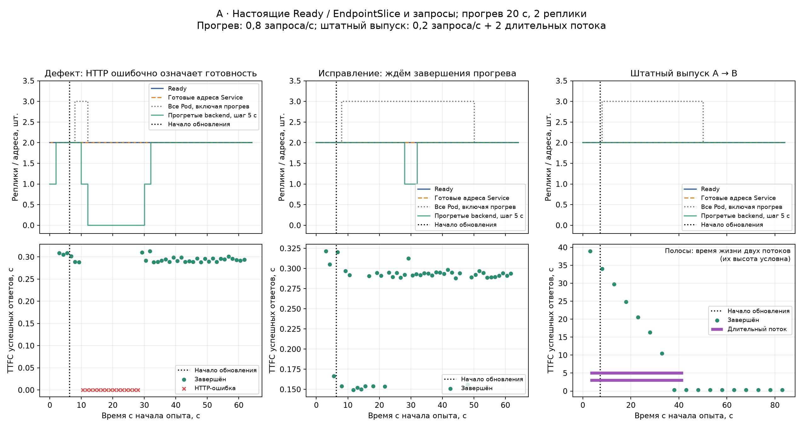
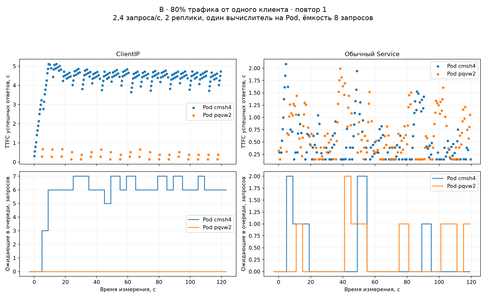
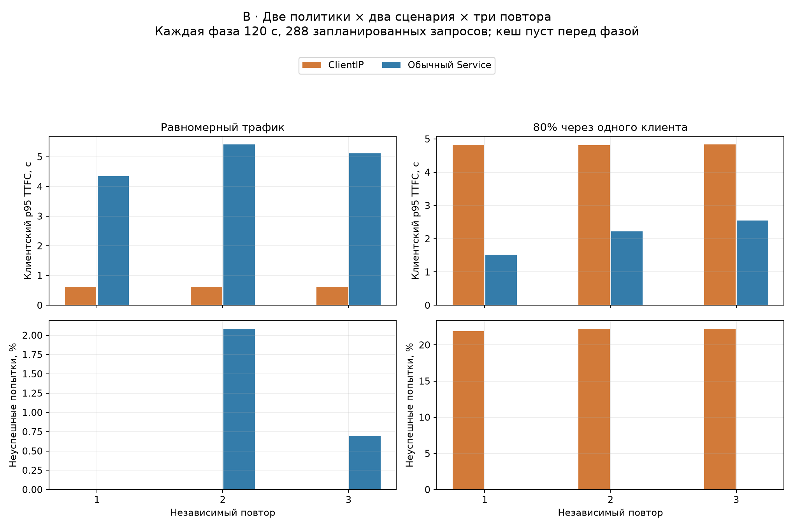
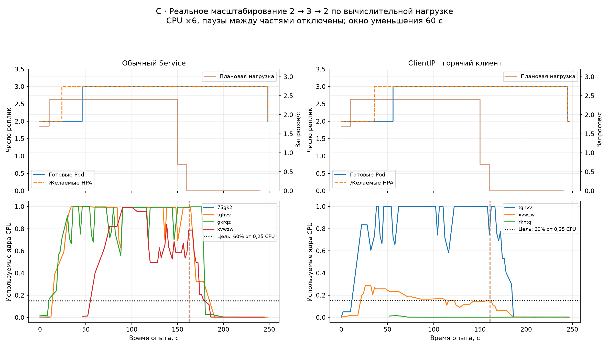

МГТУ им. Н. Э. Баумана · MLOps · 14.11.2026
ДЗ 11. Сервис работает, пользователи ждут
Губин Виталий Андреевич, ИУ6-74Б
Выполнены настоящие запуски Kubernetes, HTTP-запросы, сбор Prometheus и масштабирование.
Вычислительный backend — управляемый CPU-имитатор, явно обозначенный backend_mode=simulated.
Это разрешённый заданием вариант. Числа относятся к заданной модели нагрузки; качество языковой модели здесь не измеряется.
12 × 120 ссравнение двух политик, двух сценариев, трёх повторов
19/19завершённых запросов штатного выпуска, включая длинные потоки
2 → 3 → 2масштабирование по реальной загрузке процессора
Репозиторий: hw11, зафиксированная версия hw11-audited-v2.
Точный коммит: git rev-parse hw11-audited-v2. Запуск и удаление стенда · Все пересчитанные числа · Сырые запросы.
1. Стенд и связь с предыдущей работой
Продолжен сервис классификации обращений GitHub из ДЗ 8–10. Сохранены отдельная готовность после загрузки,
фиксированная идентичность загруженного артефакта, ограниченная очередь и правило отмены CPU-работы.
Добавлены потоковый ответ, история в запросе, имитация локального кеша и наблюдение каждой реплики.
Имитация возвращает условный ответ, а не прогноз обученного классификатора.
Apple M3 Pro, 36 ГиБ RAM. Отдельная Colima: 4 CPU, 6 ГиБ RAM, диски 12 + 8 ГиБ.
Перед подготовкой свободно 21 ГиБ. Файлы отдельной виртуальной машины фактически занимали 5,86 ГиБ выделенных блоков на хосте; пределы виртуальных дисков — 20 ГиБ. Образ API — около 256 МБ с общими слоями, уже учтён внутри машины. Инструменты и разбор лекции — ещё около 1,79 ГиБ вне неё. kind 0.30.0, Kubernetes 1.34.0, Docker 29.2.1, Helm 3.19.0.
Образ сервиса hw11-api:1.0.1; версии, идентификаторы и размеры — сведения об окружении.
Kubernetes поддерживает нужное число копий приложения через Deployment.
Каждая копия работает в отдельном Pod; Service направляет к ним запросы,
а ConfigMap хранит настройки и маленькие артефакты версий A/B.
Развёрнуты две копии приложения и два варианта Service. На API Pod: запрос 0,25 CPU / 80 MiB,
предел 1 CPU / 192 MiB. Один вычислитель, не более восьми принятых запросов. У мониторинга и клиентов также заданы лимиты.
Prometheus хранит до 3 часов / 256 MB, том не более 512 MiB; том Grafana — до 256 MiB.
При запуске сверяется SHA-256 файла модели. Загруженные версия и хеш неизменны до перезапуска и присутствуют в ответах.
История передаётся клиентом, поэтому исчезновение Pod удаляет только локальный кеш.
Манифесты · Реализация сервиса · Зависимости с хешами.
2. Опыт A: прогрев, обновление, откат и авария
Гипотеза. Доступный HTTP-процесс ещё не означает готовую модель. Если startup и readiness смотрят на /health,
Kubernetes направляет запросы во время двадцатисекундного прогрева.
Воспроизведение. При ошибочных проверках получено 15 HTTP-ошибок
из 48 запросов. Серверный журнал содержит получение запроса с warm=false;
в тот же период Ready и адреса Service уже разрешают трафик.
Исправление. startup ждёт загрузку и прогрев; readiness дополнительно учитывает вывод из обслуживания;
liveness проверяет живой HTTP-процесс. При том же расписании после исправления завершены все 48 из 48 запросов.
Штатный выпуск A → B. Два ответа заранее начаты по прямым адресам старых Pod, чтобы однозначно выбрать получателя, и пересекают начало обновления. Остальные 17 запросов идут через обычный Service.
Новые Pod прогреваются, старые завершают работу. На всём прогоне: 19 завершённых запросов,
0 HTTP 5xx, 0 незавершённых потоков и 0 отклонённых запросов.
Пять секунд даются на распространение исключения Pod из Service, затем до 45 секунд — на завершение Uvicorn;
общий grace period равен 60 секундам. Два длинных потока одновременно занимали вычислители старых реплик, поэтому p95 ожидания первой части обычных запросов в этом стрессовом выпуске составил 34.999 с при тайм-ауте чтения 70 с.
У потока на hw11-api-764f4f8fd8-zr6tw начало вывода из обслуживания записано самим приложением в 08:59:21.009 UTC, окончание ответа клиентом — в 08:59:33.918 UTC: ещё 12.909 с работы после начала остановки. Kubernetes уже показывал этот Pod как удаляемый. Ответ завершён до предельного времени 2026-11-14T09:00:20Z. Поле deletionTimestamp обозначает этот предел, а не начало остановки; расчёт проверяется по описанию метаданных Kubernetes и сырым снимкам.
Неудачный выпуск. B с намеренно сломанным прогревом остаётся неготовой и не получает рабочие запросы.
Выполнен helm rollback к сохранённой ревизии A. Версия подтверждена фактическими ответами, не только шаблоном Deployment.
Авария. Отдельно процесс завершён SIGKILL во время потока. Клиент зафиксировал обрыв после HTTP 200;
это не включено в успешный штатный выпуск. Аварийный прогон содержит 43 попытки и 2 обрыва. Сохранены частичный ответ, рестарт контейнера, снятие Ready,
прогрев и восстановление обслуживания. После удаления другого Pod проверены прежний хеш артефакта и продолжение диалога на замене.

График 1. Прогрев и штатное обновление: Ready, EndpointSlice и исходы. Крестики на нуле означают ошибки без первой части, а не нулевой TTFC. Сбор Prometheus может отставать от состояния Ready.
Сценарий A · Исходный дефект ·
Повтор после исправления · Штатный выпуск ·
Откат · Авария · Восстановление диалога.
3. Опыт B: привязка по IP и горячая реплика
Гипотеза. Привязка ClientIP может помогать локальному кешу, но при концентрации трафика перегружает одну реплику.
Сравниваются два Service над теми же Pod. Цель 80% реализована расписанием 12 из 15 запросов; в конечном наборе это 231/288 = 80,21%. Четыре клиента имеют разные адреса; фактически наблюдаемые сервером IP совпали с адресами клиентских Pod.
Сеть — kindnet и kube-proxy; keep-alive выключен, поэтому сравнение не скрыто повторным использованием одного TCP-соединения.
В каждом прогоне — 120 секунд, 2,4 запроса/с, 288 запросов, вход 128 символов и пять частей ответа.
Кеш пуст перед прогоном; модель уже прогрета. Кеш ограничен 16 префиксами, hit/miss стоят 0,02/0,16 с CPU,
часть — 0,025 с CPU и пауза 0,1 с. Во всех прогонах одинаковы параметры имитатора, длины входов и ограничения ответа.
Внутри пары политик совпадают точные запросы и расписание, проверенные хешем.
В таблицах: uniform — равномерный поток, hot80 — горячий клиент; sticky — привязка ClientIP, ordinary — обычный Service. TTFC — время от отправки запроса до первой содержательной части ответа.
| Трафик | Политика | Повтор | Успех / всего | p50 TTFC, с | p95 TTFC, с | Неуспех, % | Кеш hit*, % |
|---|
| hot80 | ordinary | 1 | 288/288 | 0.457 | 1.514 | 0.0 | 77.1 |
| hot80 | ordinary | 2 | 288/288 | 0.619 | 2.225 | 0.0 | 77.8 |
| hot80 | ordinary | 3 | 288/288 | 0.528 | 2.545 | 0.0 | 77.8 |
| hot80 | sticky | 1 | 225/288 | 4.421 | 4.828 | 21.9 | 85.8 |
| hot80 | sticky | 2 | 224/288 | 4.403 | 4.815 | 22.2 | 85.7 |
| hot80 | sticky | 3 | 224/288 | 4.430 | 4.834 | 22.2 | 85.7 |
| uniform | ordinary | 1 | 288/288 | 0.962 | 4.345 | 0.0 | 24.0 |
| uniform | ordinary | 2 | 282/288 | 1.622 | 5.411 | 2.1 | 21.3 |
| uniform | ordinary | 3 | 286/288 | 1.401 | 5.110 | 0.7 | 22.7 |
| uniform | sticky | 1 | 288/288 | 0.322 | 0.616 | 0.0 | 88.9 |
| uniform | sticky | 2 | 288/288 | 0.307 | 0.614 | 0.0 | 88.9 |
| uniform | sticky | 3 | 288/288 | 0.313 | 0.615 | 0.0 | 88.9 |
* Доля попаданий в кеш среди завершённых ответов; отказы до вычисления не считаются промахами.
Дополнительно сохранены исходные счётчики hit/miss. p50/p95 относятся только к успешным ответам.
Плановое и фактическое время различаются; максимальная задержка генератора в серии — 0.013 с.
Причина и исправление. При 80% трафика от одного клиента ClientIP создаёт очередь у привязанной реплики.
За три повтора зафиксировано 148 снимков, где одна реплика ждала в очереди, а вычислитель другой простаивал.
Выбранное исправление для этой нагрузки — обычный Service: новые соединения могут попадать на обе реплики.
Все три повтора выполнены с теми же расписаниями.
| Трафик | Политика | Среднее трёх p95, с | Диапазон p95, с | Успешных | Неуспешных |
|---|
| uniform | sticky | 0.615 | 0.614–0.616 | 864 | 0 |
| uniform | ordinary | 4.955 | 4.345–5.411 | 856 | 8 |
| hot80 | sticky | 4.826 | 4.815–4.834 | 673 | 191 |
| hot80 | ordinary | 2.095 | 1.514–2.545 | 864 | 0 |
У исправления есть цена: в равномерном сценарии привязка быстрее, потому что два клиента на Pod помещают свои префиксы в локальный кеш. Обычный Service чаще пересчитывает вход и может получить случайную очередь; во втором и третьем равномерных повторах зафиксированы отказы. Поэтому обычный Service выбран как исправление горячего сценария, а не как универсально лучшая политика.
Случай без ожидаемого перекоса тоже сохранён: в первом равномерном прогоне ClientIP распределил запросы как
[144, 144]. Трасса показывает удачное распределение четырёх IP между двумя Pod;
само наличие привязки не гарантирует дисбаланс.

График 2. Задержка и очередь каждой реплики при горячем клиенте, один и тот же первый повтор.

График 3. Все три повтора каждой комбинации политики и трафика.
Ограничение решения. Обычный Service не учитывает префикс и может терять часть попаданий в кеш.
Для настоящего движка отдельно проверяются совпадение токенов префикса, кеш внимания, память ускорителя,
пакетная генерация, разные длины входа/выхода и политика, одновременно учитывающая кеш и очередь.
Результат имитатора не доказывает оптимальность обычного Service для любой языковой модели.
Сценарий B · Сеть и сервисы ·
Трасса горячей реплики.
4. Опыт C: CPU, число реплик и оповещения
Гипотеза. Автоматическое масштабирование по средней CPU-метрике добавляет ёмкость,
но само по себе не перераспределяет уже привязанных клиентов.
HPA autoscaling/v2: минимум 2, максимум 3, цель 60% от запроса 250m CPU, окно уменьшения 60 секунд.
Resource Metrics API проверен реальным запросом. Нагрузка вычисляет PBKDF2: стоимость CPU увеличена в шесть раз, пауза между частями отключена.
Результат. В обоих сценариях сохранён переход 2 → 3 → 2 вместе с условиями HPA, CPU, временем создания
и готовности нового Pod. Время возврата включает обновление метрик, решение контроллера и завершение лишней реплики;
оно не обязано точно равняться 60 секундам настройки. Отсчёт в таблице идёт от завершения сбора
нагрузочного прогона до первого наблюдения двух готовых реплик на часах управляющего процесса.
Это наблюдаемый срок возврата, а не точная внутренняя длительность окна контроллера.
Состояние ScaleDownStabilized сохранено отдельно в сырых данных.
| Опыт | Новая реплика | Создана, UTC | Ready, UTC | Прогрев, с | Запросов новой | Окончание сбора → 2 Ready, с |
|---|
| C-hpa-uniform | hw11-api-6fcf7857db-xvwzw | 09:08:29 | 09:08:50 | 21.0 | 64 | 86.7 |
| C-hpa-hot80 | hw11-api-6fcf7857db-rkntq | 09:12:59 | 09:13:21 | 22.0 | 0 | 86.6 |
В горячем сценарии одного занятого ядра достаточно, чтобы среднее превышало целевые 0,15 ядра на Pod.
После добавления третьей реплики прежние записи ClientIP продолжают направлять запросы к прежним адресам.
Новая ёмкость поэтому может оставаться почти неиспользованной. Среднее CPU полезно для оценки общей загрузки,
но не заменяет наблюдение очередей отдельных реплик.

График 4. Число готовых/желаемых реплик, предложенная нагрузка и CPU каждой реплики.
Два оповещения. Порог p95 TTFC — 1 с; порог доли неуспешных исходов — 5%.
Для обоих требуется не менее 20 наблюдений за минуту и удержание условия 15 с.
Управляемый всплеск 18 запросов/с сменяется здоровой нагрузкой 0,5 запроса/с.
В сохранённой линии состояний у каждого оповещения присутствуют pending, firing и возврат в inactive.
{
"HighTTFC": [
{
"wall": 1794647793.307997,
"state": "inactive"
},
{
"wall": 1794647823.347463,
"state": "pending"
},
{
"wall": 1794647837.36693,
"state": "firing"
},
{
"wall": 1794647921.489504,
"state": "inactive"
}
],
"HighFailureFraction": [
{
"wall": 1794647793.307997,
"state": "inactive"
},
{
"wall": 1794647813.334997,
"state": "pending"
},
{
"wall": 1794647827.356981,
"state": "firing"
},
{
"wall": 1794647911.472468,
"state": "inactive"
}
]
}
Сценарий C · Правила оповещений ·
Сырые переходы и нагрузка · Экспорт работающего дашборда.
5. Измерения и проверка чисел
Клиент использует монотонные часы. TTFC — от фактической отправки до первой содержательной части;
inter-chunk latency — интервалы между последующими частями. У N частей N−1 интервал.
Завершающая запись done не считается содержательной частью. Для одной части интервал отсутствует.
Сохранены planned/sent/first/end, статус, Pod, версия, хеш, число частей и исход каждой попытки.
Автоматических повторов нет. В контролируемой паре политик логический request_id совпадает; однозначный ключ отдельной попытки — experiment/request_id, сохранённый в сводном журнале как attempt_id. Исходные журналы содержат исходный request_id и времена; ни одна попытка не объединяется с другой.
Для успешного ответа недостаточно HTTP 200: нужны завершающая запись и ожидаемое число частей.
Плановые и отправленные запросы в B: 288/288 в каждом прогоне. Остальные исходы приведены отдельно:
| Прогон | Отправлено | Завершено | 429 | HTTP-ошибка | Оборвано | Нет соединения | Тайм-аут |
|---|
| A-warmup-broken | 48 | 33 | 0 | 15 | 0 | 0 | 0 |
| A-warmup-fixed | 48 | 48 | 0 | 0 | 0 | 0 | 0 |
| A-rollout | 17 | 17 | 0 | 0 | 0 | 0 | 0 |
| A-rollback | 66 | 66 | 0 | 0 | 0 | 0 | 0 |
| A-crash | 42 | 41 | 0 | 0 | 1 | 0 | 0 |
| A-long-0 | 1 | 1 | 0 | 0 | 0 | 0 | 0 |
| A-long-1 | 1 | 1 | 0 | 0 | 0 | 0 | 0 |
| A-killed-stream | 1 | 0 | 0 | 0 | 1 | 0 | 0 |
| B-hot80-ordinary-r1 | 288 | 288 | 0 | 0 | 0 | 0 | 0 |
| B-hot80-ordinary-r2 | 288 | 288 | 0 | 0 | 0 | 0 | 0 |
| B-hot80-ordinary-r3 | 288 | 288 | 0 | 0 | 0 | 0 | 0 |
| B-hot80-sticky-r1 | 288 | 225 | 63 | 0 | 0 | 0 | 0 |
| B-hot80-sticky-r2 | 288 | 224 | 64 | 0 | 0 | 0 | 0 |
| B-hot80-sticky-r3 | 288 | 224 | 64 | 0 | 0 | 0 | 0 |
| B-uniform-ordinary-r1 | 288 | 288 | 0 | 0 | 0 | 0 | 0 |
| B-uniform-ordinary-r2 | 288 | 282 | 6 | 0 | 0 | 0 | 0 |
| B-uniform-ordinary-r3 | 288 | 286 | 2 | 0 | 0 | 0 | 0 |
| B-uniform-sticky-r1 | 288 | 288 | 0 | 0 | 0 | 0 | 0 |
| B-uniform-sticky-r2 | 288 | 288 | 0 | 0 | 0 | 0 | 0 |
| B-uniform-sticky-r3 | 288 | 288 | 0 | 0 | 0 | 0 | 0 |
| C-hpa-uniform | 360 | 284 | 76 | 0 | 0 | 0 | 0 |
| C-hpa-hot80 | 360 | 177 | 183 | 0 | 0 | 0 | 0 |
| alerts-burst | 810 | 88 | 722 | 0 | 0 | 0 | 0 |
| alerts-healthy | 50 | 50 | 0 | 0 | 0 | 0 | 0 |
Задержки только завершённых ответов для A и C (для B — таблица выше). Доля неуспехов включает все исходы, кроме completed; тайм-ауты дополнительно выделены как её часть.
| Прогон | Успешных n | p50 TTFC, с | p95 TTFC, с | p95 всего, с | p95 между частями, с | Неуспех, % | Тайм-аут, % |
|---|
| A-warmup-broken | 33 | 0.294 | 0.310 | 0.817 | 0.129 | 31.2 | 0.0 |
| A-warmup-fixed | 48 | 0.292 | 0.310 | 0.822 | 0.128 | 0.0 | 0.0 |
| A-rollout | 17 | 0.299 | 34.999 | 35.509 | 0.128 | 0.0 | 0.0 |
| A-rollback | 66 | 0.291 | 0.303 | 0.812 | 0.128 | 0.0 | 0.0 |
| A-crash | 41 | 0.291 | 0.294 | 0.808 | 0.128 | 2.4 | 0.0 |
| A-long-0 | 1 | 0.741 | 0.741 | 38.727 | 0.429 | 0.0 | 0.0 |
| A-long-1 | 1 | 0.658 | 0.658 | 38.676 | 0.429 | 0.0 | 0.0 |
| A-killed-stream | 0 | — | — | — | — | 100.0 | 0.0 |
| C-hpa-uniform | 284 | 7.806 | 11.931 | 12.537 | 0.157 | 21.1 | 0.0 |
| C-hpa-hot80 | 177 | 7.033 | 9.409 | 10.019 | 0.153 | 50.8 | 0.0 |
| alerts-burst | 88 | 8.756 | 9.027 | 9.935 | 0.228 | 89.1 | 0.0 |
| alerts-healthy | 50 | 0.292 | 0.297 | 0.805 | 0.128 | 0.0 | 0.0 |
Длительности хранятся в Histogram. Для дашборда применяется, например:
histogram_quantile(0.95,
sum by (le, pod) (rate(hw11_ttfc_seconds_bucket[1m])))
Для точной сверки B берутся разности накопленных bucket-счётчиков в сохранённых моментах T0/T1
после завершения всех запросов и полного сбора метрик. Это исключает смешивание соседних прогонов.
Гистограммы учитывают только завершённые ответы; число наблюдений проверяется на равенство клиентскому журналу:
histogram_quantile(0.95,
sum by (le) (
hw11_ttfc_seconds_bucket @ T1 -
hw11_ttfc_seconds_bucket @ T0))
| Прогон | Клиент n | Сервер n | Клиент p95, с | Prometheus p95, с | Разница, с |
|---|
| B-hot80-ordinary-r1 | 288 | 288 | 1.514 | 1.553 | 0.040 |
| B-hot80-ordinary-r2 | 288 | 288 | 2.225 | 2.256 | 0.030 |
| B-hot80-ordinary-r3 | 288 | 288 | 2.545 | 2.537 | -0.007 |
| B-hot80-sticky-r1 | 225 | 225 | 4.828 | 5.858 | 1.030 |
| B-hot80-sticky-r2 | 224 | 224 | 4.815 | 5.855 | 1.040 |
| B-hot80-sticky-r3 | 224 | 224 | 4.834 | 5.859 | 1.025 |
| B-uniform-ordinary-r1 | 288 | 288 | 4.345 | 4.892 | 0.548 |
| B-uniform-ordinary-r2 | 282 | 282 | 5.411 | 5.458 | 0.047 |
| B-uniform-ordinary-r3 | 286 | 286 | 5.110 | 5.183 | 0.072 |
| B-uniform-sticky-r1 | 288 | 288 | 0.616 | 0.608 | -0.008 |
| B-uniform-sticky-r2 | 288 | 288 | 0.614 | 0.608 | -0.006 |
| B-uniform-sticky-r3 | 288 | 288 | 0.615 | 0.608 | -0.007 |
Значение Prometheus интерполируется внутри границ bucket; клиентский p95 считается непосредственно по
измеренным длительностям и включает сетевую доставку. Поэтому значения могут различаться.
Границы: 0,01; 0,025; 0,05; 0,1; 0,2; 0,4; 0,6; 0,8; 1; 1,5; 2; 3; 4; 6; 8; 12; 20; 30; 60 с.
Дашборд показывает TTFC, полную длительность, running/waiting по Pod, завершённые ответы/с,
отказы, CPU, RAM, Ready и попадания в кеш. Prometheus обнаруживает и собирает каждый API Pod.
Идентификаторы запросов и диалогов не являются метками метрик.
При проверке исправлен запрос, скрывавший waiting при объединении через OR. Исходный сбор Prometheus
сохранил значения, поэтому очередь серии B повторно выгружена из хранилища за те же интервалы.
Первоначальные снимки и ответы query_range сохранены отдельно; производная линия явно указывает источник
и время оценки. Исправленный селектор выбирает все нужные имена метрик сразу.
Пересчёт и автоматические утверждения.
6. Пять собственных проверок и границы результата
- Новый Pod во время прогрева возвращает 503 на /ready и не является готовым адресом Service; после прогрева отвечает.
- После настоящего отката ответы содержат A и ожидаемый SHA-256; дополнительно выполнен живой запрос к Kubernetes.
- После удаления Pod новая реплика с другим UID восстанавливает тот же артефакт и продолжает переданную историю.
- Отклонённые и оборванные запросы сохранены отдельно; частичный HTTP 200 не засчитывается в успех.
- Два диалога с различными контрольными строками возвращают только свою историю.
Код проверок · Реальные ответы и состояние Kubernetes · Результат запуска пяти проверок · Аудит требований.
Первый дефект показан до и после исправления в опыте A; проверка исходного сбоя не заменена утверждением о готовности.
Один локальный узел не проверяет потерю целого узла или облака. CPU-имитатор не проверяет качество модели,
настоящие токены, кеш внимания и разделение видеопамяти. Наблюдение очереди имеет шаг примерно 2 с,
Prometheus — 5 с, CPU-метрики — 15 с. Три повтора описывают устойчивость этой нагрузки и не дают
универсальных гарантий. Пробные запуски сохранены локально отдельно от окончательной серии.
Дополнительная перепроверка 15.11.2026
Независимый скрипт сопоставил исходные расписания, все клиентские записи и события сервера:
формулы времени, исходы, историю диалога, состав сравниваемых наборов, каждую границу
гистограмм и последовательность попаданий в ограниченный кеш. Все сверки прошли.
В основных опытах 5260 попыток; ещё 13 служебных запросов сохранены отдельно.
Исправлены два дефекта повторного запуска: сборщик больше не дописывает новые наблюдения
к старым, а тест прогрева каждый раз меняет ревизию и создаёт новый Pod. Прошлые результаты
автоматически сохраняются в локальный архив. Пять проверок сервиса прошли дважды подряд;
три дополнительные проверки подтвердили защиту старых файлов. Код работающего сервиса,
клиента и его зависимости не менялись: их хеши совпадают с измеренным образом.
Независимый пересчёт ·
Результаты сверки ·
Два успешных запуска ·
Проверки сохранности результатов.
7. Ревью предложения о постоянной привязке диалога
При указанных условиях новый запрос направляю на B: повторная обработка занимает 0,8 секунды, тогда как одно ожидание A — 3 секунды. При прочих равных B начнёт отвечать минимум на 2,2 секунды раньше. Постоянную привязку диалога к Pod в предложенном виде не одобряю. Её можно сохранить как предпочтение, которое уступает прогнозу времени ожидания.
До внедрения нужны стоимость обработки фактических длин входа и выхода, очередь и число активных запросов каждой реплики, точное совпадение кешируемого префикса, доступная память, свежесть метрик и p95 задержки. Надо проверить, что A и B действительно имеют независимую вычислительную ёмкость, используют одинаковые модель и настройки, а не конкурируют за один ускоритель.
Перед допуском нового запроса оцениваю ожидаемую задержку и свободное место в ограниченной очереди. Если обе реплики не укладываются в бюджет, возвращаю явный отказ; повтор разрешаю с ограничением числа попыток и случайной задержкой. Каждая попытка получает отдельный идентификатор.
Историю храню у клиента либо во внешнем хранилище. После потери A следующий запрос передаёт всю подтверждённую историю на B, заново вычисляет префикс и проверяет версию модели. Кеш остаётся ускорением, а не единственной копией диалога. Начатый поток не переношу между репликами: при штатном обновлении он завершается на A. При аварии отмечаю неполный ответ и начинаю отдельную попытку по явному решению клиента, не склеивая два разных продолжения.
Это согласуется с кейсом Google из лекции: команда Vertex AI усилила влияние очереди относительно кеша и ограничила допуск входящих запросов. В её публикации p95 времени до первого токена для DeepSeek V3.1 снизился на 52%, а доля попаданий в префиксный кеш выросла с 35% до 70%. Это результаты их нагрузки. Наш опыт подтверждает механизм очереди на имитаторе; такие проценты для настоящей модели из него не следуют.
Первичный источник: Google Cloud — How we cut Vertex AI latency by 35% with GKE Inference Gateway, 06.02.2026.
В предоставленной лекции — главы 65–72, примерно 07:29–09:16; численные результаты на слайде 70.
Привязка к записи лекции.
Источники и воспроизведение
Все локальные действия запуска и удаления, лимиты, версии и настройки генератора приведены в инструкции.
Лекция, музыка, виртуальная машина, скачанные библиотеки и файлы доступа в репозиторий не входят.